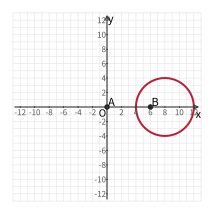
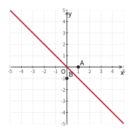
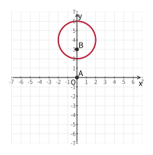

別冊練習問題 5 の解答 複素数平面上の軌跡（アポロニウスの円）
(1) 方程式 \(|z-0|=2\,|z-(6)|\) を満たす点 \(z\) 全体はどんな図形か。
\(|z-\alpha|=k|z-\beta|\) の2乗
\(z=x+yi\) とおいて両辺を2乗する。
\[(x-\left(0\right))^2+(y-\left(0\right))^2=4\left\{(x-\left(6\right))^2+(y-\left(0\right))^2\right\}\]展開して整理する
\[- 3 x^{2} + 48 x - 3 y^{2} - 144=0\]\[x^{2} - 16 x + y^{2} + 48=0\]円の方程式にする
\[(x-\left(8\right))^2+(y-\left(0\right))^2=16\]中心 \(8\)、半径 \(4\) の円（アポロニウスの円）。

【答案】
\[\text{中心 }8\text{、半径 }4\text{ の円}\]答
(2) 方程式 \(|z-(1)|=|z-(- i)|\) を満たす点 \(z\) 全体はどんな図形か。
\(z=x+yi\) とおいて2乗する
\[|z-1|^2=|z-- i|^2\]\[(x-\left(1\right))^2+(y-\left(0\right))^2=(x-\left(0\right))^2+(y-\left(-1\right))^2\]整理する
\[- 2 x - 2 y=0\]\[y=- x\]図形
\[\text{直線 }y=- x\]線分 \(AB\) の垂直二等分線。

【答案】
\[\text{直線 }y=- x\]答
(3) 方程式 \(|z-0|=2\,|z-(3 i)|\) を満たす点 \(z\) 全体はどんな図形か。
\(|z-\alpha|=k|z-\beta|\) の2乗
\(z=x+yi\) とおいて両辺を2乗する。
\[(x-\left(0\right))^2+(y-\left(0\right))^2=4\left\{(x-\left(0\right))^2+(y-\left(3\right))^2\right\}\]展開して整理する
\[- 3 x^{2} - 3 y^{2} + 24 y - 36=0\]\[x^{2} + y^{2} - 8 y + 12=0\]円の方程式にする
\[(x-\left(0\right))^2+(y-\left(4\right))^2=4\]中心 \(4 i\)、半径 \(2\) の円（アポロニウスの円）。

【答案】
\[\text{中心 }4 i\text{、半径 }2\text{ の円}\]答